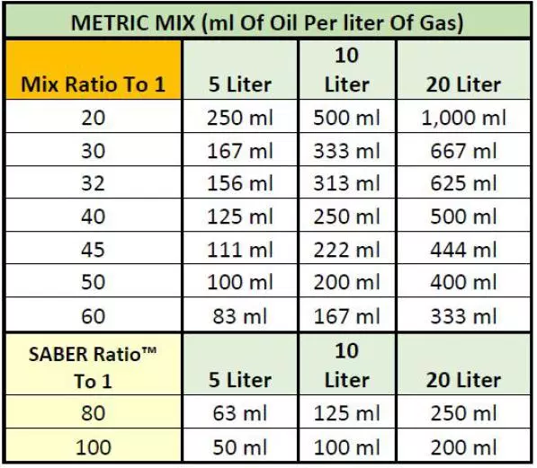

What i learned while riding
Gloves, helmet, boots, knee pads, elbow pads and if you have a jersey and pants you should wear those too.
Every time you have mixed gas for your dirt bike you want to keep it separate from your other gasses and mark your jerrycan. You always want to write what ratio mix you did in that jerrycan. For example 32:1 which is my bike, I would write that on the side of my jerrycan with permanent marker or paint.
You will want to check the compression, all the breaks and the suspension. No leaks in the transmission and gas tank. You want to make sure you don't have flat tires.
In my case, I kickstart my bike, some bikes only have an electric start. After you turn over your bike you have to let it warm up for about 5-7 minutes depending on the weather outside. This ensures that your bike is properly warmed up and the piston won't expand into your cylinder causing scoring, scratching and seizing.
Once you get the bike started and it's all warmed up, it's time to start riding first you want to pull in the clutch which is on the left side of the bike if you didn't know that, you pull it in and use your left foot to shift down into first gear the rest of the gears are up. One down is 1st gear, and one click up is neutral and then one click up again is 2nd and the rest of the gears are also up. (5-6 gears)
Shift though the gears to make sure there is no sticking in the gears and that it shifts smoothly. Then test the breaks and warm them up and then your ready to ride.
By Adrian